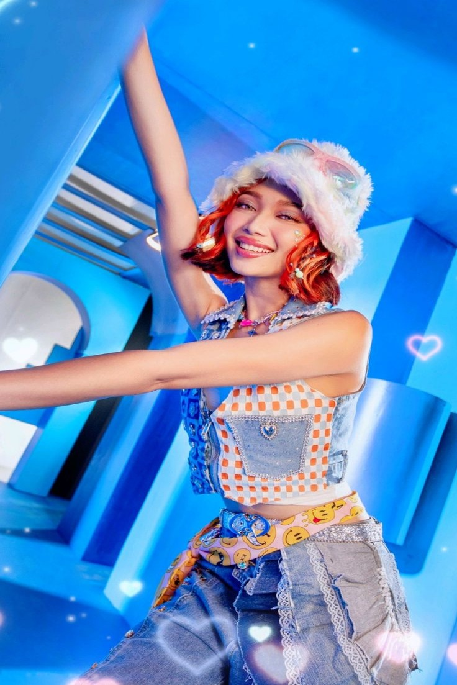

Full Name: Gweneth Llaguno Apuli
Stage Name: Bebe, Gwenny
Birthday: February 5, 2003 (Age 21)
Position in BINI: Main Dancer, Vocalist, and Rapper
Hometown: Gwen is originally from Daraga City, Albay
- Hobbies
- Outside of her group activities, Gwen enjoys spending her time dancing, exploring fashion, and engaging with fans through social media platforms. She is also interested in fitness and maintains a healthy lifestyle to support her demanding schedule as a performer.
- Inspirations
- Gwen looks up to artists who embody strong work ethics and passion for their craft, drawing inspiration from them to fuel her own performances.